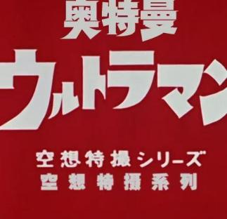

Ultraman

Click to visit the official Ultraman website

Ultraman was created by Tsuburaya Productions in 1966. As a silver-and-red giant hero, he protects Earth from monsters and extraterrestrial threats.

Ultraman possesses super strength, flight capability, powerful beams, and strong justice values. His design symbolizes hope and bravery.
From the iconic "Specium Ray" to energy shields and high-speed movement, Ultraman's abilities continue evolving across different series.
The Ultraman world spans numerous universes, heroes, and monster species, creating one of Japan’s most iconic tokusatsu franchises.
Different Ultramen often join forces, forming legendary teams such as the New Generation Heroes, Ultra Brothers, and more.

The Ultraman series continues expanding through movies, TV shows, comics, and merchandise, beloved by fans worldwide.
Ultraman